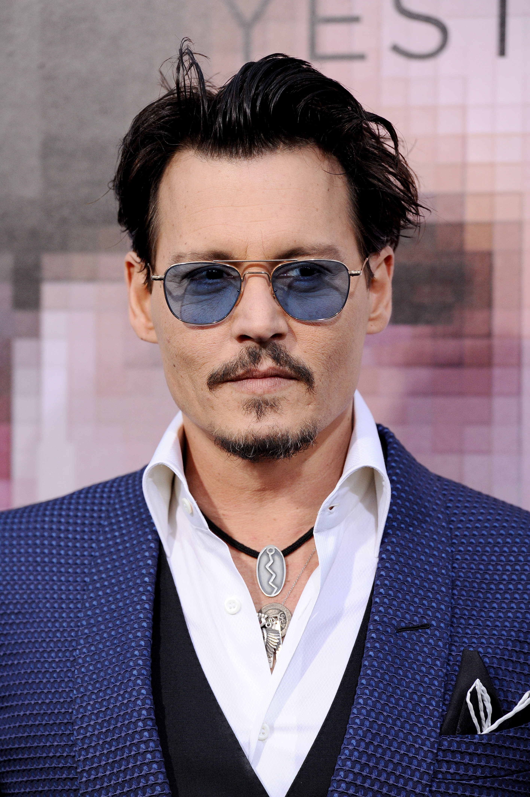

Джонни Депп — актер, сценарист, режиссер, продюсер. На этом список его достижений не заканчивается. Джонни еще поет и играет на музыкальных инструментах. За мастерское исполнение ролей получил «Золотой глобус». «Оскара» в его коллекции нет, но он был несколько раз номинирован на эту престижную премию. Имя актера внесено в Книгу Гиннеса. Джонни Депп — самый высокооплачиваемый артист
МС детства Джонни пытался сделать все, чтобы выделиться. Благодаря этому сумел стать своеобразным кумиром для многих сверстников. Обучение в школе ненавидел всей душой, часто прогуливал занятия. Курить Джонни стал, когда исполнилось 12 лет. В это же время начал употреблять спиртные напитки. Доучиться он так и не смог, потому что был отчислен.
